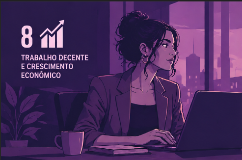
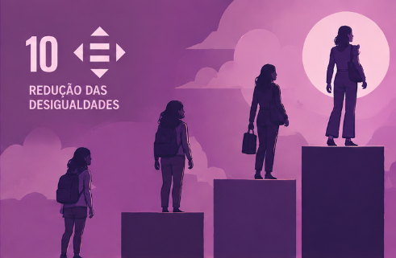
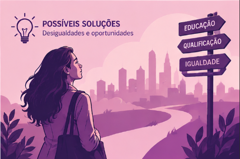

Quais oportunidades foram oferecidas a essas mulheres antes que elas chegassem a esse ponto?
Trabalho digno não deveria ser um privilégio.
A ODS 8 busca promover o crescimento econômico inclusivo, o emprego pleno e produtivo e o trabalho decente para todas as pessoas. Para o nosso projeto, ela representa o direito de mulheres terem acesso a empregos seguros, dignos, justamente remunerados e com oportunidades reais de crescimento.

A ODS 10 busca reduzir as desigualdades dentro da sociedade. Quando fatores como pobreza, gênero, raça e falta de acesso a oportunidades se cruzam, algumas mulheres podem enfrentar barreiras ainda maiores para entrar e permanecer no mercado de trabalho.
Em nossa Feira Tecnológica, escolhemos abordar um problema que ainda faz parte da realidade de muitas mulheres: a dificuldade de acesso a oportunidades de trabalho e à independência financeira. Nosso projeto parte de duas das Objetivos de Desenvolvimento Sustentável (ODS) da ONU:
A falta de acesso à educação e à qualificação profissional pode limitar as possibilidades de inserção no mercado de trabalho. Para mulheres em situação de vulnerabilidade econômica, a falta de oportunidades pode dificultar a conquista da independência financeira e aumentar a exposição a situações de risco.
Entenda o problema
Enfrentar esse problema exige mais do que criar empregos: é necessário ampliar o acesso à educação, à qualificação profissional, à renda e a oportunidades de trabalho digno. Reduzir desigualdades significa criar condições para que mulheres tenham autonomia e possam escolher seus próprios caminhos.
Conheça as possíveis soluçõesAntes de pensar em soluções, precisamos entender quais fatores contribuem para esse cenário.
| Escolaridade | Quantidade | Porcentagem |
|---|---|---|
| Ensino Fundamental incompleto | 1.493 | 59,2% |
| Ensino Médio incompleto | 599 | 23,7% |
| Ensino Médio completo ou mais | 431 | 17,1% |
| Total | 2.523 | 100% |
| Situação | Quantidade | Porcentagem |
|---|---|---|
| Não possui outro trabalho | 1.630 | 64,6% |
| Trabalha por conta própria | 524 | 20,8% |
| Empregada sem carteira | 256 | 10,1% |
| Empregada com carteira | 113 | 4,5% |
| Total | 2.523 | 100% |
No Brasil, o nível de escolaridade das mulheres é superior ao dos homens: entre eles, 21,5% frequentaram o ensino superior; entre elas, 29,75%, segundo a pesquisa Estatísticas de Gênero, do IBGE, divulgada em março de 2021. Porém, o mercado de trabalho não reflete essa situação. Historicamente, mulheres possuem desvantagens na área, como menor participação na força de trabalho, ocupação de setores e cargos menos valorizados, e menores salários. E a pandemia só veio agravar essa situação. Dados recentes revelam que, no Brasil, as mulheres ganham, em média, 77,7% do salário dos homens, segundo o Instituto Brasileiro de Geografia e Estatística (IBGE). Apesar dos avanços significativos, ainda existem disparidades notáveis entre homens e mulheres em diversos aspectos profissionais. De acordo com a gerente do Unit Carreiras e especialista em gestão de pessoas, Janaína Machado, essa discrepância se deve aos grandes obstáculos que as mulheres enfrentam no mercado de trabalho.
Quatro em cada dez mulheres no Brasil já abriram mão de uma vaga de emprego ou de uma oportunidade profissional por dificuldades de deslocamento. Falta de segurança, custos, tempo e distância estão entre os fatores que influenciam essas decisões.
Este projeto foi desenvolvido por cinco estudantes que uniram tecnologia, pesquisa e criatividade para abordar esse tema.